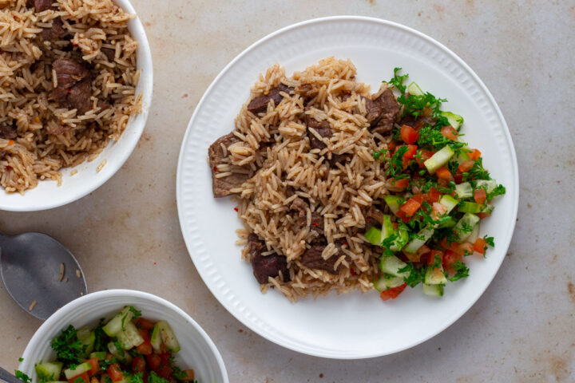

Kenyan Pilau

An African Dish,yummy! Though its roots unknown,it's mainly served in the coastal region of Kenya.Luckily it made its way throughout the country
Ingredients
- rice
- beef
- garlic
- pilau masala
- bay leaves
- salt
- ground cumin
- ground cardamon
- ground cloves
- peper flakes
Steps
- peel the onions and garlic cloves
- wash the beef and add it to a pan.slice in 1 onion and 2 garlic cloves with the ginger.Add bay leaves with a cup of water and some salt to taste
- cook until the meat is tender,remove from heat.keep meat chunks and stock to one side
- Chop the remaining onion and garlic
- Wash the rice and repeat until the water runs clear
- In another pan, heat the oil under low heat. Add the onions into the pot and cook until the onions start to caramelize and become brown. You should stir the onions with a wooden spoon continuously to prevent burning
- Pour in the garlic and the ground spices. The brownish colour comes from the brown spices. Stir for 30 secs
- Add the rice into the pot. Pour in the stock and meat chunks. Add more water so there is enough to cook the rice (read the rice pack instructions). Taste for salt and add more if needed
- Cover the allow the rice to cook until all the moisture is absorbed